香港电影中有两个人的作品特别耐看，一个是杜琪峰，另一个是王家卫。
王家卫的作品中，我最喜欢《东邪西毒》，前前后后至少看了八遍。
这是华语电影里的一座高峰，那里萦绕着最思绪万千的音乐，流畅着最痴心真意的情感，飘荡着最令人醉生梦死的朵朵桃花。
它有最美丽的摄影和最凌厉的武打场面，它为观众贡献了最多的经典台词。
总之，它是一部难以复制和超越的经典！
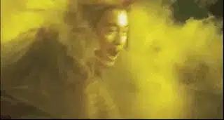
-01- 拒绝
欧阳锋父母早亡，是个孤儿，因为这样，他从小就懂得保护自己，性格封闭、猜忌、好强。
他知道如果不想被别人拒绝，就先拒绝别人。
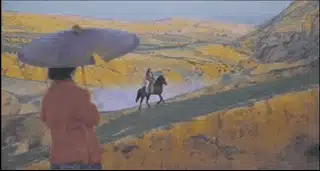
因此他喜欢一个女人，却从来都不肯向对方吐露真意。
不幸的是，这个女人也一样好强，认为爱情里可以分个胜负，既然欧阳锋一直一声不吭，那她就做他的大嫂，让欧阳锋永远后悔。
最终，欧阳锋远走大漠，而女人则“独”守白驼山。
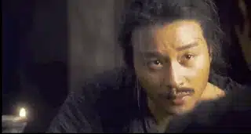
分开后，他们仍然彼此牵挂，却还是不肯直接书信往来，而是通过一个人和一坛酒来继续着这场爱情游戏。
这个人就是黄药师，每年桃花盛开的时候，黄药师都会去白驼山做客，女人总会托黄药师送给欧阳锋一坛美酒。
这坛酒有个奇怪的名字，叫做醉生梦死酒，据说喝了可以忘记以前发生的所有事。
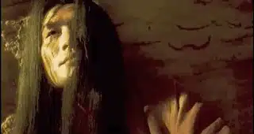
欧阳锋每一年都会在大漠中等着和黄药师畅饮那坛美酒。
一年又一年，黄药师不知不觉爱上了白驼山上的女人，但是黄药师却没有说出口，因为他认为得不到的永远是最好的。
看着女人终日对欧阳锋牵肠挂肚，黄药师不禁开始嫉妒欧阳锋，他想知道被人喜欢到底是一种什么样的感觉。
于是黄药师四处留情却不愿意忠于一方，伤害了很多人。
他在明知道大燕国公主慕容嫣女扮男装的情况下，却故意借酒挑逗“如果你是女儿身，我一定会娶你”。
慕容嫣信以为真，而黄药师却无情爽约。
甚至黄药师留情最好朋友的妻子，导致人家夫妻形同陌路，而他却还是辜负了那个可怜女人......
这部电影描述了故事相当复杂，为了让大家理解，所以我不得不打破原本精妙绝伦的故事结构，按照逻辑直接将主线呈现。
在电影中，故事是从黄药师带着酒去找欧阳锋开始讲起，接着是慕容嫣、盲武士、孤女、洪七的故事，最后才呈现出欧阳锋和他大嫂以及黄药师之间的爱恨故事。
只用一个半小时，王家卫便借着欧阳锋的独白呈现出六段爱恨交织的故事，电影首尾呼应、浑然天成，剧作功力之深令人惊叹。
-02- 软弱
记得第一次看到这部电影时，我在读高中，除了开头林青霞雌雄难辨，对着一片湖和自己的倒影比武的场景很吸引我，其他则看的我莫名其妙。
只是一个又一个大牌明星拉着脸出来自言自语，我都不知道这电影在讲什么，还是《龙门客栈》、《东方不败》这样的电影够劲。
上了大学后，因为《大话西游》用了这部电影的配乐，于是我又看了一遍。
看完后我被深深的震撼，怎么会有电影能够将人们的软弱和孤独如此完美、如此诗意地呈现出来。
人有时候真的很脆弱，要用最文艺的借口掩饰自己的伤口。
慕容嫣被黄药师伤害，她对黄药师又爱又恨以至于精神分裂。
恨黄药师的时候，她便是英气狠辣的慕容燕，他请欧阳锋杀黄药师，理由是欧阳锋辜负了自己的妹妹慕容嫣。
爱黄药师的时候，她便是痴情真意的慕容嫣，她请欧阳锋杀掉自己的哥哥慕容燕，因为哥哥阻止她和黄药师在一起。

看着痛不欲生、自我割裂的慕容嫣，欧阳锋明白“一个人受了挫折，或多或少总会找个借口掩饰自己，其实慕容嫣、慕容燕只是一个人的两个身份，在这两个身份后面藏着一个受了伤的人”。
一个晚上，慕容嫣借酒消愁，喝了很多的酒，酒醉的慕容嫣把欧阳锋看成是黄药师，第一次，她有机会向“黄药师”赤露敞开了自己的软弱：
你说不能同时喜欢两个人，有人说，你最喜欢的女人是她，我曾经找过她。
本来想要杀掉她，后来我没有这么做，因为我不想证明她就是。
我曾经问过我自己，你最喜欢的女人是不是我，现在我已经不想再知道。
如果有一天我忍不住问你，你一定要骗我，就算你的心有多么不愿意也不要告诉我你最喜欢的人不是我。
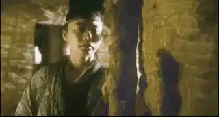
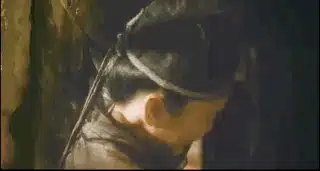
想爱又害怕受伤甚至用自欺来安慰自己，这一幕看的很让人心疼。
欧阳锋为了安慰慕容嫣，告诉她喜欢的人就是你。
看着这个女人一下子变的如此开心，欧阳锋不禁想起曾经有人也问过他一样的问题，但是他却没有回答。
没有想到，换作“别人”的身份，这个问题其实并不难回答。
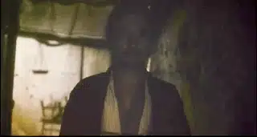
梁朝伟饰演的是盲武士，他是一个被人背叛而自我放逐的落魄剑客，因为自己的妻子爱上了自己最好的朋友黄药师。
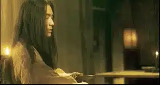
他曾发誓如果再见到黄药师一定会杀了他。
当醉的一塌糊涂的黄药师要请他喝酒时，盲武士说他今天只想喝水，他告诉黄药师：“知不知道喝酒和喝水的区别，酒越喝越暖，水越喝越寒”。
黄药师让他心寒，盲武士拒绝了他的酒，却放过了他的性命。
不仅因为他不忍动手，还因为他的双眼已经看不清任何东西了。
盲武士患有眼疾，他最后的希望就是在彻底失明前回去看看家乡盛开的桃花。
因为没有盘缠，他找到欧阳锋，要执行杀一批马贼的任务来获得盘缠。
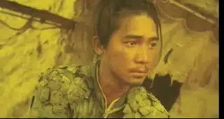
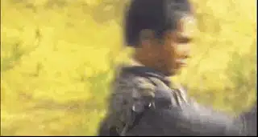
可是，那一天阴云盖住了猛烈的太阳，因为看不清敌人，盲武士被对方一刀毙命。
刀速很快，鲜血喷出的声音像一阵风声，不知道这股风可否吹到盲武士家乡的桃花。
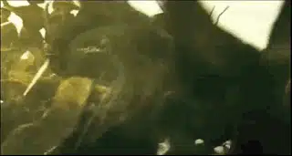
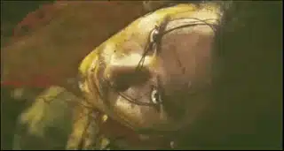
后来，欧阳锋去了盲武士的故乡，但他却没有发现灿烂的桃花。
那里只有一个叫桃花的女人，她就是盲武士的妻子。
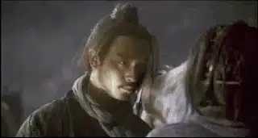
既然这么想她，为什么还要到处跑，为什么不留在她身边呢。
可是说的轻巧，被人伤害过又怎么会有那么大的勇气继续留下来，欧阳锋不也是像他一样自我放逐在荒芜的沙漠之中。
盲武士临死前都不能再见一面自己最爱的女人。
欧阳锋也是一样，他深爱的女人思念成疾而病逝。
直到最后，看着镜中花容失色、面容憔悴的自己，女人才知道她输了，在她最好的时候，她爱的人不在自己身边。
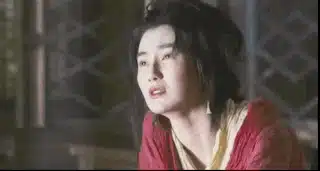
而醉生梦死也只是她跟欧阳锋开的玩笑，一个人越想知道自己是不是已经忘记，反而会记得越清楚。
那天晚上，欧阳锋喝了那半坛子醉生梦死，他醉倒在桌上，在梦中他梦见家乡白驼山的桃花开了，那边有个女人一直在等他。
暗恋的女人去世，黄药师知道他也一样输了，而且从一开始就输了。
其实，“得不到的永远是最好的”也只是黄药师不敢开口的托词，他知道那个女人心里只有欧阳锋，不可能喜欢自己。
黄药师醉生梦死、痛苦不堪，甚至他所有事都忘记了，只记得他喜欢桃花。
这也是为什么他留情于另外两个女人的原因，他和慕容嫣在姑苏城一见如故，当时那里也一样盛开着桃花，而盲武士妻子的名字直接就叫桃花。
桃花已是他可望不可及的梦幻，故人已逝，黄药师隐居小岛，种了一大片桃花树，自称桃花岛主。
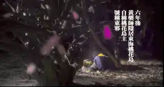
-03- 出路
每个人都像困在笼中的小鸟，他们渴望爱，却不敢说出口，千思万绪郁积于心，想要忘却痛苦但却记得更加清楚。
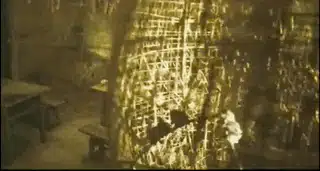
电影中唯一能够冲出牢笼的就是洪七。
他为人简单、出刀很快，认为是对的事情就会去做。
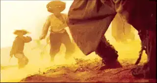
为了填饱肚子，他在欧阳锋手下做事，不得不按照欧阳锋的风格做事。
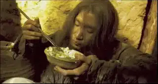
他的“刀”渐渐变慢了，当孤女求他帮自己被杀的弟弟报仇时，洪七竟然拒绝了孤女。
因为他知道欧阳锋绝对不会为了一个鸡蛋去冒险。
那一天，洪七对自己很失望，他知道他已经完全变了，他觉得和欧阳锋混在一起，像是变了一个人。
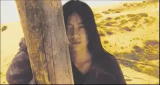
最终，洪七单刀赴会，替孤女报了仇，也因此被人砍断了一根手指，而洪七只收了孤女一个鸡蛋作为报酬。
欧阳锋看着受伤的洪七，问他为了一个鸡蛋丢了一个手指值得么。
洪七告诉他，“不值得，但是我觉得痛快，这才是我自己”。
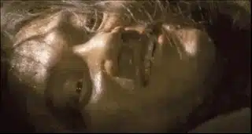
认为正确的事就去坚持做，认为要珍惜的东西就永不放弃。
洪七从不会抛下他的骆驼不管，就是闯天下，洪七也不会丢下自己的妻子。
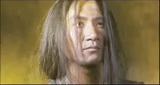
洪七最终告别欧阳锋，留下一句“谁又没有规定不能带着老婆闯江湖”，便扬长而去。
看着洪七牵着骆驼带着老婆远去，欧阳锋不禁心生妒忌，他曾经也有过这样的机会，可惜他放弃了。
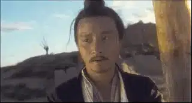
也许你会觉得欧阳锋太矫情，但是如果你去看一下身边那些经过家庭破碎、受过伤害的孩子，你就会明白，那是真实的。
被人抛弃过，被人拒绝过，被人伤害过的人，都会像欧阳锋一样坚强独立但却异常敏感，渴望被爱却不知道如何去爱，想要拥抱却始终封闭。
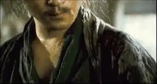
我自己也是这样，记得小时候我和老师在楼道迎头相遇，老师冲我打招呼，我都会贴着墙低着头走过去，不是我不知道礼貌，是我实在不能像别人那样很阳光、很大方地和人打招呼。
如果很多人注视我的话，我甚至连路都走不好，胳膊都不知道怎么摆。
别人给我照相的时候，我总是四肢僵硬、没有表情，像是个机器人。
表面坚强甚至看上去阳光，内心里很多时候很阴郁。
上了大学，我也慢慢发现自己是个很没有安全感的人，我难以真正信任别人，我习惯主宰自己的命运。
因此我容易固步自封，也难以走入信仰。
所幸，在每个阶段，总有一些人始终陪伴我，我渐渐明白，一个人要是能真正爱别人，首先要有人爱他。
先会领受爱，才有可能去爱人，如果去观察那些很有爱心的人，你会发现他们往往是很懂得感恩的人。
有些人别人对他100次好，有一次不好，他就会终生记恨对方，他不会领受爱，所以更不会爱别人。
所以《圣经》中很精辟地揭示了这个道理：我们爱，是因为神先爱了我们。
这是一个人得已真正勇敢和释放的力量。
洪七能有那么大的勇气，也是因为她的妻子就有那么大的勇气和决心。
洪七为了闯江湖原本将她丢在老家，可是这个女人不远千里来找洪七，在客栈外几天不吃不喝等着洪七。
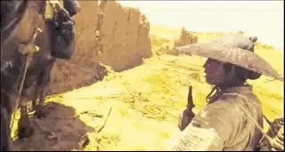
这个女人给了洪七极大的勇气，洪七最终明白，为什么不可以带着老婆呢，事在人为嘛！
-04- 时间
《东邪西毒》的英文名是Ashes of Times，意为时间的灰烬，在王家卫的江湖中，最厉害的不是武功，而是时间。
王家卫自己说过：
每个人都能在这部电影中找到自己的影子，它不仅是一部武侠片，也是跟我们今天大部分人的情感相关联的。
我们在生命的过程中有时候有一些决定，都缘于某一种固执或执着。
拍《东邪西毒》的时候，我更多想表达的是生命中那些不愉快的痛苦的事情始终都会像流水一样过去，到最后存在的都是美好的感情，这种美好的感情会循环不息。
因此在2008年上映的《东邪》终极版中，与旧版最大的不同就是加入了惊蛰，夏至，白露，立春，惊蛰五个节气的标题字幕，将全片分为五章。
在时间的长河中，欧阳锋见证了慕容嫣、盲武士和洪七的故事，他从中观照到了自己性格上的悲剧和对大嫂深沉的爱意。
时间虽夺走了大嫂的生命，给欧阳锋留下了遗憾和失落，但却同时给他留下了刻骨铭心的回忆。
面对遗憾，欧阳锋告诉自己，“当你不能够再拥有的时候，唯一可以做的就是令自己不要忘记”。
这是时间概念里对于美好的珍重和纪念，欧阳锋、黄药师、慕容嫣、盲武士、桃花也许很悲剧，但是悲剧中一样流淌着真情痴意，只是他们没有洪七那样幸运。
电影之外的时间同样非常戏剧性。
电影从1992年开拍，断断续续拍摄到1994年才完成，在王家卫漫长熬人的拍摄中，一句句经典的台词被酝酿而出，演员的潜能也被慢慢激发而出。
在这期间，还诞生了一部“副产品”《东成西就》。
2008年，王家卫花了4年时间重新修复剪辑的《东邪西毒：终极版》在戛纳电影节首映，随后在世界各地巡回上映。
这也是本片主演张国荣当初的愿望，希望这部电影能够冲出亚洲走向世界。
令人唏嘘的是2003年张国荣却永远告别了这个世界。
今天，当我们看着镌刻在银幕中芳华绝代的张国荣、梁朝伟、梁家辉、张学友、林青霞、张曼玉、刘嘉玲、杨采妮时，这本身也是一种时间的奇迹。

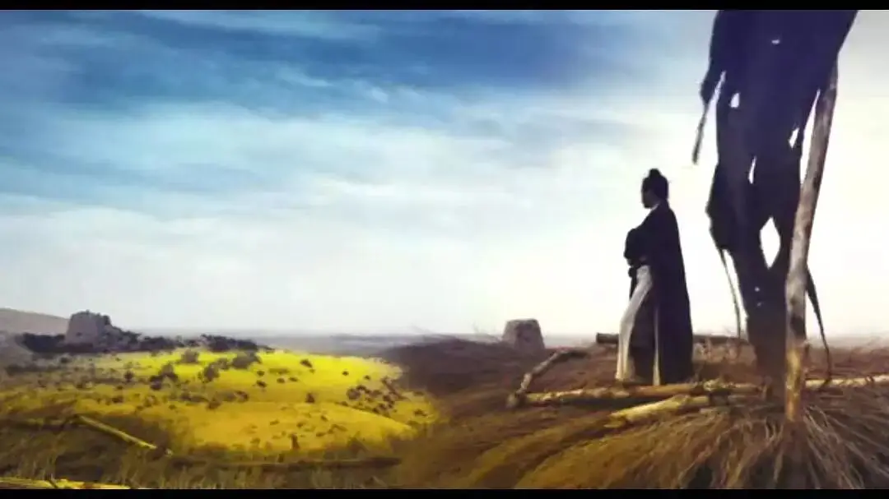
这里没有挑逗你眼目情欲的小鲜肉
也没有挑动你肉体情欲的段子
更没有膨胀你今生骄傲的鸡血
我们只在乎那些最质朴真诚的作品
在那里我们才能恢复真正的想象力
我们也坚信这才是我们真正需要的

ID:Six_hundred_hits
长按二维码，一键关注
【六百击】
-END-
电影评论
尽情分享朋友圈

苹果打赏通道
小提示：文末广告是腾讯配送广告，内容与本号无关，但您的每次点击（无需反复点）都会给平台带来几毛收益，欢迎您点击支持六百击。